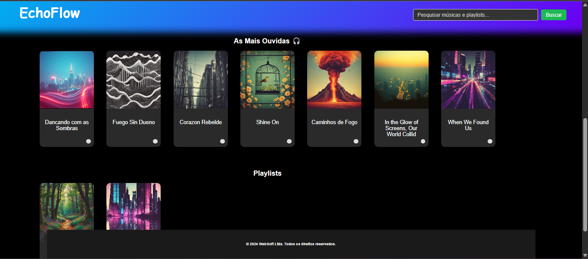
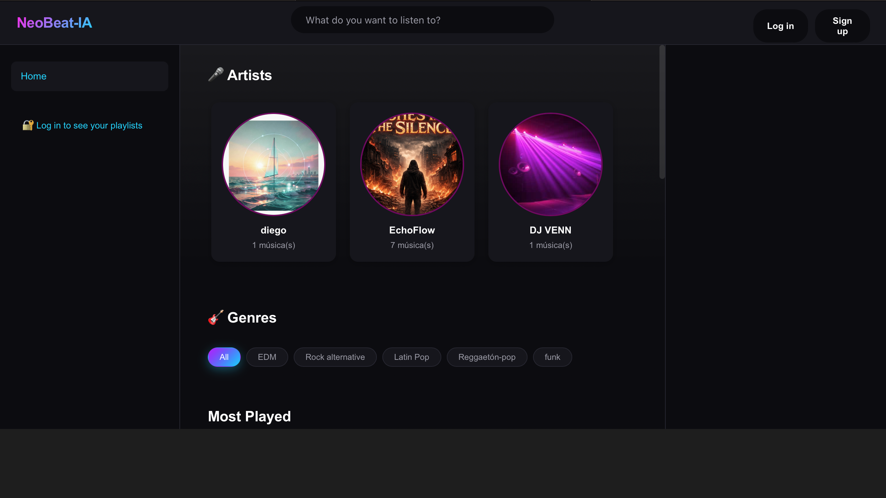

Ecommerce Carla Figueiredo
Loja virtual completa, desenvolvida do zero com React no front-end, Node.js no back-end e Supabase como banco de dados e autenticação. O projeto foi publicado com domínio próprio e está no ar.
Construo interfaces web responsivas e funcionais, do primeiro <div>
até a integração com banco de dados. Atualmente buscando minha primeira oportunidade
para crescer junto de um time de produto.
// stack atual const dev = { nome: 'Diego Nessler', foco: 'front-end', stack: ['HTML', 'CSS', 'JavaScript', 'PHP', 'Java', 'MySQL'], aprendendo: 'boas práticas de UI', disponivel() { return true; } };
Sou Diego Nessler, estudante de Engenharia de Software e desenvolvedor fullstack apaixonado por transformar ideias em soluções web completas, da interface ao banco de dados. Tenho experiência construindo aplicações do zero e estou em busca de uma oportunidade para aplicar o que aprendi em projetos reais, contribuir com um time e continuar evoluindo como desenvolvedor.
Trabalhos acadêmicos e pessoais construídos para praticar front-end, back-end e integração com banco de dados.
Loja virtual completa, desenvolvida do zero com React no front-end, Node.js no back-end e Supabase como banco de dados e autenticação. O projeto foi publicado com domínio próprio e está no ar.

Aplicação inspirada no Spotify: cadastro e login com senha criptografada, busca de músicas, playlists e perfis de usuário.

Landing page fictícia integrada a um sistema de vendas com login, cadastro de produtos e recuperação de senha via banco de dados.

Plataforma de música construída com React e TypeScript no front-end, Node.js no back-end e Supabase para autenticação, login de usuários e armazenamento de músicas e imagens.
Formação, cursos e experiências em um único documento.
Aberto a oportunidades de estágio e primeiro emprego como desenvolvedor front-end back-end e fullstack. Me manda uma mensagem.
// outras formas de contato